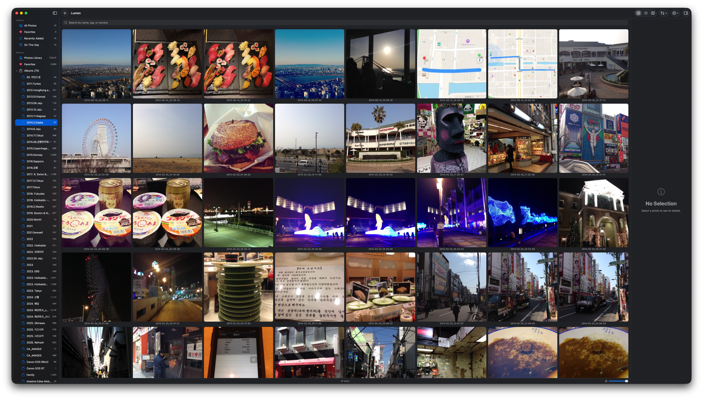
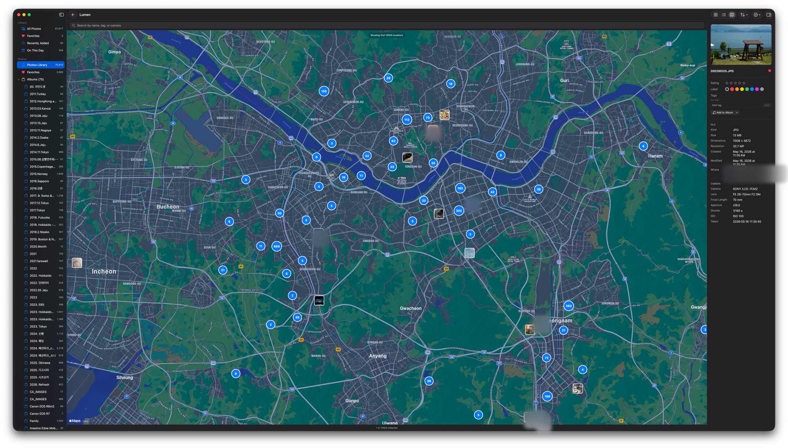
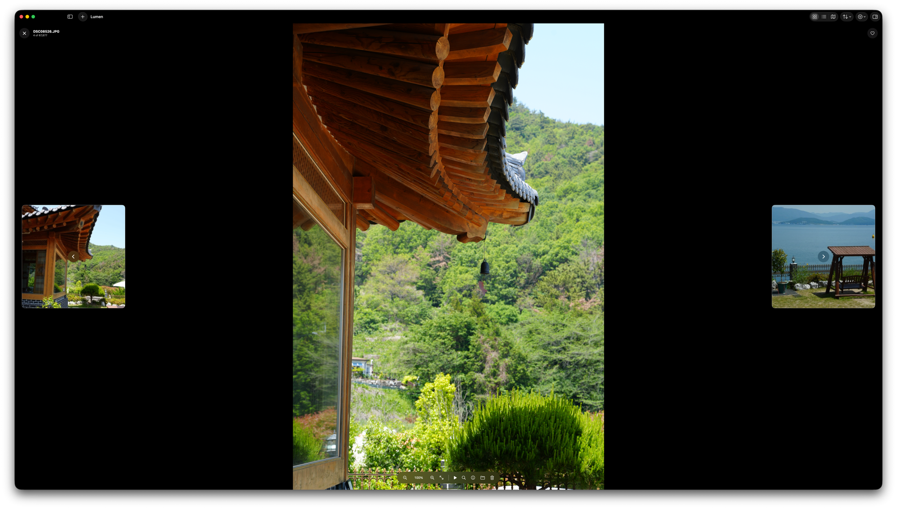

로컬 · NAS · Apple Photos를 하나의 빠른 네이티브 앱에서. 6만 장이 넘어도 휙휙 넘어가는 macOS 사진 뷰어 & 매니저.
Apple Silicon · Intel · 오픈소스(MIT)

왜 Lumen인가
6만 장 넘는 NAS 라이브러리로 실사용 테스트. 셀 재사용 그리드, 2단 썸네일 캐시, 백그라운드 워밍으로 어느 폴더든 즉시 열립니다.
로컬 폴더, NAS, 그리고 Apple Photos(iCloud)까지 한 창에서. 사진앱이 못 보는 NAS와, 뷰어가 못 보는 iCloud를 동시에.
크롭·리사이즈·회전·합치기·워터마크까지 전부 새 파일로 저장해 원본을 보존합니다(덮어쓰기는 확인 후 선택). 즐겨찾기·태그·별점은 원본과 분리 저장.
기능
흩어진 사진을 하나의 사이드바에서. iCloud 전용 사진은 필요할 때만 내려받고, GPS 사진은 지도에 클러스터로 묶어 보여줍니다.

풀스크린으로 몰입. 그리고 사진가를 위한 가장 빠른 컬링 동작:

크롭(비율 고정·자유) · 회전/뒤집기 · 수평 맞추기 · 리사이즈/정사각 캔버스(여백 채움). 큰 편집창에서 줌·정밀 크롭, 결과 크기 미리보기까지. 전부 새 파일로.
여러 장을 가로/세로/그리드로 한 장에(드래그로 순서·행 지정). 텍스트·로고 워터마크(위치·색·투명도) — 편집·합치기·배치 어디서나.
여러 장을 한 번에 같은 크기·캔버스·워터마크로 리사이즈해 폴더로 내보내기. 원본은 그대로.
앨범 · 태그 · 별점 · 색상 라벨 · 거부 플래그 · 스마트 모음(즐겨찾기·최근·오늘·중복). 원본은 절대 변경하지 않습니다.
파일명 · 태그 · 카메라 모델 검색. 별점 · 라벨 · 위치 · 카메라(예: SONY) · 거부 숨김으로 필터.
시스템 공유, 원본/리사이즈/zip 내보내기, 일괄 이름변경, 배경화면 설정.
성능
NAS에 흩어진 수만 장도 휙휙. 한 번 캐싱하면 어느 폴더든 즉시.
실측 환경 — 사진 67,676장 · 폴더 638개 · Synology NAS(SMB) · Apple Silicon. 합성 벤치마크가 아니라 실제 라이브러리에서 자동화 시나리오로 측정한 값입니다.
| 테스트 | 결과 |
|---|---|
| 앱 시작 → 썸네일까지 채워진 그리드 | 창 등장 후 1~2프레임 (로딩 화면 없음) |
| 라이브러리 캐시 디코드 (67,676장) | ~100 ms |
| 폴더 열기 — 폴더·앨범 644개 전부 순회 | 평균 1 ms · p95 3 ms · 최대 9 ms |
| 실행 직후 첫 폴더 클릭 | ~4 ms |
| 사진 클릭 → 정보 패널 갱신 | ~3 ms |
| 전체 선택 (⌘A, 67,676장) | ~0.2 초 |
| 검색 — 67k장 필터+정렬 | 메인 스레드 차단 0 (백그라운드 처리) |
| 썸네일 크기 조절 · 창 리사이즈 | 멈춤 없음 (GPU 스케일) |
측정 방법: 메인 스레드 히치 모니터(120Hz) + 프레임 단위 화면 캡처 + 프로파일러 샘플링, v0.3.6 기준. 과정은 릴리즈 노트에 그대로 적혀 있습니다.
메모이즈된 목록 · 폴더 인덱스 · 디바운스 내비게이션 · 백그라운드 썸네일 워밍 · 지연 EXIF 인덱싱 · 점진적 이미지 로딩
다운로드
Homebrew로 한 줄. macOS 14(Sonoma) 이상.
brew tap rescenedev/tap
brew trust --cask rescenedev/tap/lumen-photos
brew install --cask lumen-photos
xattr -dr com.apple.quarantine "/Applications/Lumen.app"
git clone 후 ./Scripts/make_app.sh — Xcode 불필요, Command Line Tools만.